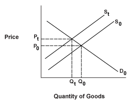

An unexpected event that changes the supply of a product or commodity, resulting in a sudden change in its price. Supply shocks can be negative (decreased supply) or positive (increased supply); however, they are almost always negative and rarely positive. Assuming aggregate demand is unchanged, a negative supply shock in a product or commodity will cause its price to spike upward, while a positive supply shock will exert downward pressure on its price.
When output is increased (decreased), the price of the good decreases (increases) due to a shift in the supply curve to the right (left). The above diagram demonstrates an increase in price due to a decrease in the supply of a good relative to demand.
Supply shocks can be created by any unexpected event that constrains output or disrupts the supply chain, including natural disasters and geopolitical developments such as acts of war or terrorism. The commodity that is widely perceived as being the most vulnerable to negative supply shocks is crude oil, since most of the world's supply comes from the volatile Middle East region.
{kind=link}